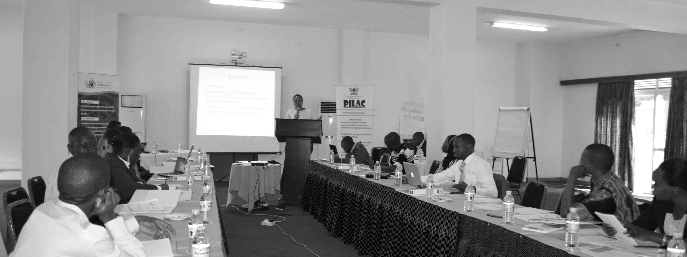

Know About Our Company An umbrella for Public Interest Lawyering launched in May 2015
With the aim of promoting public interest lawyering and the pro bono spirit in Uganda, the Network of Public Interest Lawyers (NETPIL) was officially launched in May 2015. The establishment of the Network was spearheaded by the Public Interest Law Clinic (PILAC) at Makerere University, School of Law to foster greater engagement of lawyers in public interest litigation and advocacy towards achieving social justice and greater protection of fundamental rights for all.
"Our vision is a legal profession committed to serving the justice needs of society."
"It’s mission is to promote and strengthen public interest lawyering as a means to pursue social justice and the protection of human rights."
The objectives of the Network are to:
- Building and nurturing social justicelawyers;
- Enhancing capacity of its members to engage in public interest lawyering,and more specifically social justice;
- Creating awareness of public interest lawyering as an effective strategy to promote social justice and to better understand and litigate on emerging public interest law issues;
- Promoting litigation-based advocacy,including instituting strategic cases on topical, constitutional law matters;
- Coordinating litigation-based research, including conducting such research to support the network’s advocacy actions;
- Acting as a support and coordination mechanism for public interest lawyers and related initiatives.
Our Values
- Integrity
- Professionalism
- Equality
- Respect for Human Rights
- Accountability
- Transparency and Solidarity
EVENtS
-
Health PIL Manual Validation
The validation will be done by NETPIL and Legal Support Network (LSN)
Date: Tue 19th Feb 2019 -
Public Lecture
Topic: Teaching Sexuality Education
Date: Friday 22nd Feb 2019
Time: 2pm
WHAT IS LITIGATION?
Litigation is where a legal complaint is initiated before the court by a person who believes he/she has suffered, or is suffering, harm.
For the litigation to be successful, that person must demonstrate to the court that he/she has been legally wronged (in other words, that person’s legal rights have been breached).
WHAT IS PUBLIC INTEREST LITIGATION?
As the term suggests, PIL describes legal action that is taken in order to advance a “good cause” or issue of public importance. Examples could include cases brought to:
- Improve the human rights situation in a region
- Advance women’s rights
- Promote equality rights
- Ensure the public has access to information and is able to express its opinions
- Protect the environment
Building and nurturing social
justice lawyers
GOALS OF PIL AND REMEDIES WHICH CAN BE SOURGHT
That solution or remedy could be one of the following:
- A ruling that expresses authoritative support for a group’s argument or complaint
- A legal order requiring a certain action to be taken
- A legal order preventing or stopping an event or series of events from happening
- Aruling securing financial compensation for a group of people who have been legally wronged
The formal finding that a legal wrong has been done is extremely important. The court's official endorsement of one party’s version of the facts over another’s shows the rightfulness of the successful party’s position and this can have long-reaching consequences. It can lead to the court taking positive or preventative action to offer protection to the group or interest facing threat.
Although financial compensation may not seem an appropriate solution to some complaints, its suitability or symbolic value in certain situations should be recognised. Furthermore, compensation may, in some cases, be a complete and suitable remedy for a group who believe they have been wronged.
For more serious or systemic issues such as murder, rape, or gender inequality, compensation alone cannot fully provide a just solution. In such cases, better law enforcement, law reform or social change, is necessary. This is a second goal of PIL: to create a legal precedent for the future so that hopefully, no other individual or group will suffer the same the wrong.
Often rulings by constitutional or supreme courts are legally binding, which means they need to be taken into account when writing laws in the future. In some systems and in certain courts, legal rulings may necessitate parliamentary action.
Finally, PIL can be used to achieve a broader objective than simply winning or defending a case. The very process of bringing or defending a case may raise public awareness of an issue and foster public support for change in a law or practice. In this way, PIL may aid other methods of promoting change like lobbying, political activism, or demonstrations.
Publications
Contact Info
AddressPublic Interest Law Clinic School of Law, Makerere University
Phone0414531195
Emailnetpil.secretariat@gmail.com
Office HoursMon - Friday, 9:00 - 5:00